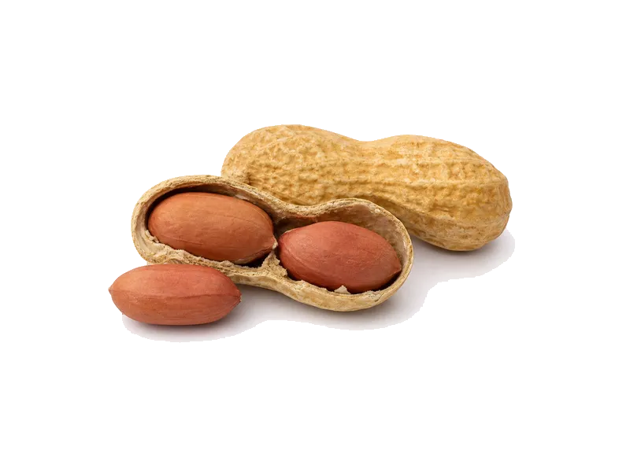

Orzechy
Orzechy ziemne
Orzechy ziemne: 26 g białka, 567 kcal, 16 g węglowodanów i 49 g tłuszczu na 100 g. Kategoria: Orzechy.
Kalorie567 kcalna 100 g
Białko / proteiny26 g
Węglowodany16 g
Tłuszcz49 g
Cena (szac.)~6,00 złza 100 g
Ceny zaktualizowano: maj 2026 (szacunek — ceny w popularnych supermarketach)
Porcja: garść (30g)
| Kalorie | 170 kcal |
|---|---|
| Białko | 7.8 g |
| Węglowodany | 4.8 g |
| Tłuszcz | 14.7 g |
| Cena (szac.) | ~1,80 zł |
Szczegółowe składniki odżywcze na 100 g
| Wartość energetyczna (kalorie) | 567 kcal |
|---|---|
| Białko (proteiny) | 26 g |
| Węglowodany | 16 g |
| Tłuszcz | 49 g |
| Tłuszcze nasycone | 6.8 g |
| Tłuszcze nienasycone | 42.2 g |
| Witaminy i minerały | Niacyna, Kwas foliowy, Magnez |
| Współczynnik kcal / 1 g białka | 21.8 |
| Cena produktu (szac. za 100 g) | ~6,00 zł |
| Cena za 100 g białka (szac.) | ~23,08 zł |